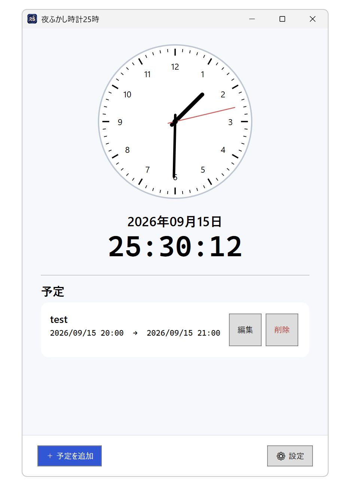
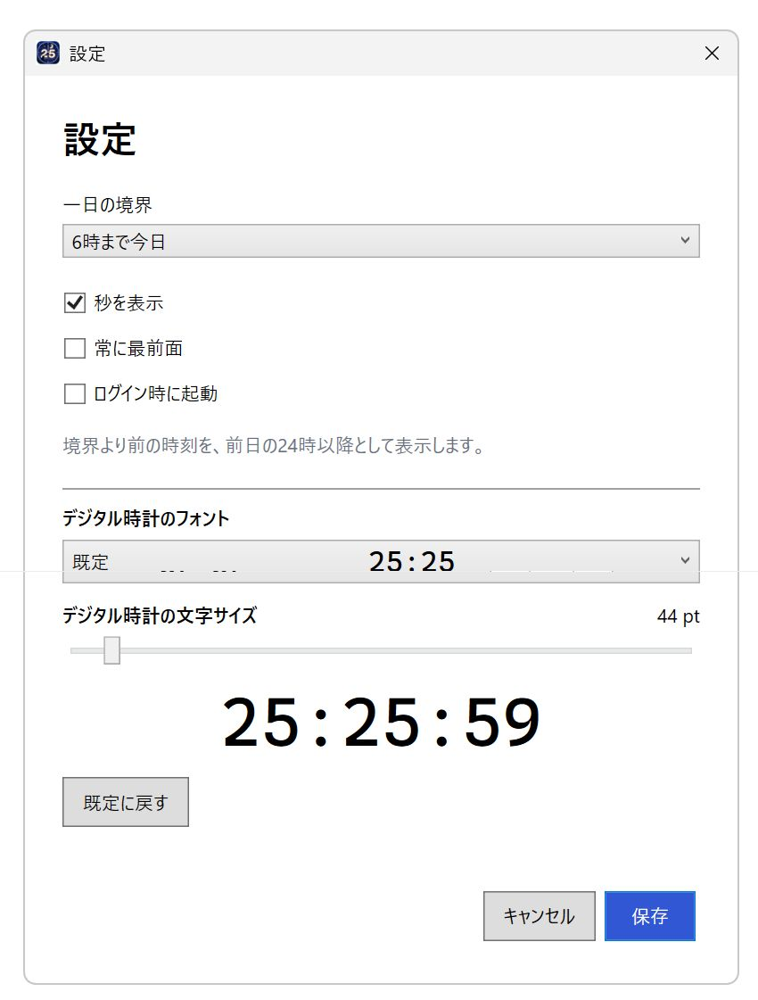

一日の終わりを、自分で。
「X時まで今日」を0〜12時から選べます。初期値は5時。アナログ時計は実際の時刻、デジタル時計は生活日付に合わせた時刻を表示します。
夜ふかし時計25時 Windows版
YOUR DAY, AT YOUR OWN PACE
夜の続きを、25時で。
あなたの一日の区切りに寄り添う、
Windowsのための時計と予定管理。
5時まで今日 表示例
生活日付：2027年7月7日
25:25
午前5時になると、当日の日付に切り替わります。
MAIN WINDOW
いつものアナログ時計と、今日の続きを映すデジタル時計。
深夜の予定も、同じ画面で確認できます。

A LITTLE MORE OF TODAY
24:30、25:00、26:30。午前0時を過ぎても、指定した境界時刻までは前日の続きとして表示します。「5時まで今日」なら、午前0時から4時59分までは前日の24〜28時台。時計の下の日付も、この区切りに合わせた「生活日付」になります。
「X時まで今日」を0〜12時から選べます。初期値は5時。アナログ時計は実際の時刻、デジタル時計は生活日付に合わせた時刻を表示します。
タイトル、開始・終了日時、メモを保存。0〜35時で入力し、25時記法のまま一覧に表示します。追加・編集・削除に対応し、予定はアプリ内で管理します。
秒表示、フォント、文字サイズ、最前面表示をあなた好みに。ログイン時の自動起動にも対応し、ウィンドウの位置・サイズ・最大化状態を保存します。
予定と設定はパソコン内に保存します。外部カレンダーへの登録・連携や、予定時刻の通知・アラーム機能はありません。

MAKE IT YOURS
夜の作業にも、配信の時間にも。
時計の見え方を変えて、いつものWindowsに。
「既定に戻す」でフォントと文字サイズをリセット。変更したら「保存」を押してください。
READY WHEN YOU ARE
64ビット（x64）Windows用 · MIT License
ソースコードも公開しています。利用・改変・再配布の条件は、同梱のLICENSE.txtをご覧ください。
インストーラーでのセットアップは不要です。予定と設定は、通常 %LOCALAPPDATA%\NightOwlClock25 に保存されます。
「ログイン時に起動」は、実行ファイルの置き場所を決めてから有効にしてください。
詳しい使い方を読むMIT Licenseを読む{kind=link}